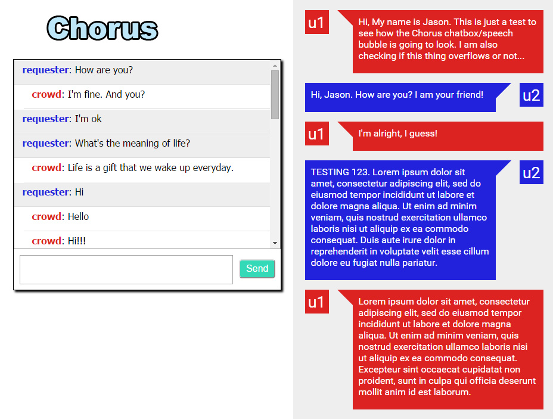
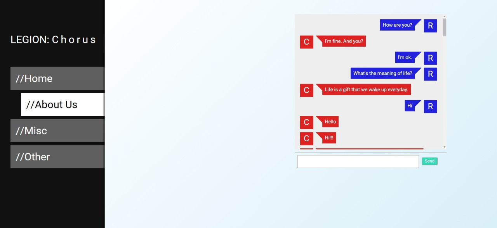
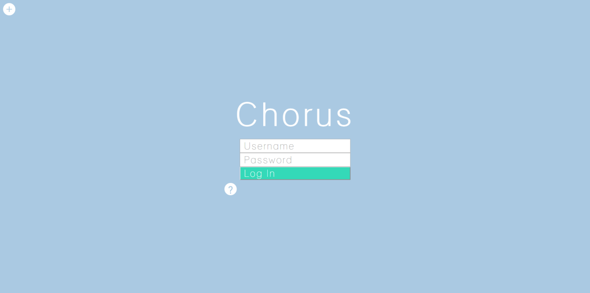
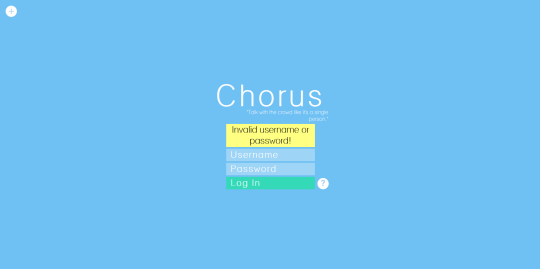
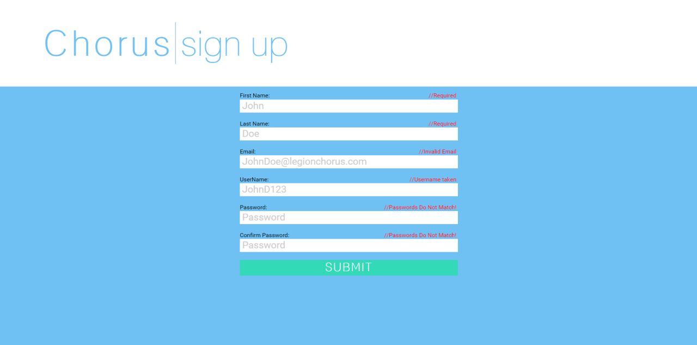

LEGION: Chorus
Role: CMU Human Computer Interaction | Web Designer
Time Period: January 2015 - May 2015
I worked under Jeff Bigham from CMU's Human Computer Interaction Institute to redesign their web based crowd computing chat application called Chorus. Chorus, was a project aimed to help users ask questions and receive answers from crowd computing via chat interface. I mainly used html, css, and Javascript to redesign the web application.
The IssueWhen I joined the group, Chorus was already working, but there were two issues, the web application was not responsive for both mobile and desktop screens, and it also did not look pleasing. With that, I was hired to help the team deal with making the interface look cleaner and responsive. I worked on the chat interface itself, the login, and register pages.
ProcessBelow are my preliminary sketches of my first few designs. Here I tried to go for more of a mobile app look, partially because there was not that much content on the page. I should also note that I did not have a full screenshot of what the first system looked like. These preliminary sketches spanned over the course of the whole project, as I would work on it page by page. First was the chat interface, then the login, and last the register page.
I had two initial ideas: one was with a sidebar, and ther other was more of a topbar nav with buttons.
I apologize for the bleed of the pen - I made the novice mistake of using binder paper to make my sketches, and on top of that, I chose to draw on the backsides, as I wanted to save paper. Regardless, here are two iterations of my login page - pretty standard.
Here is the register page. I did not really have any guidelines for the sketch. I just tried to keep it simple.
Here are some of the individual components that I made. I first started out by focusing on the chat box, as you can see the comparisons of the old chat box compared to a prototype. After the chatbox, I began implementing a sidebar to other links, a login page, and last a register page.
Chat box comparison: old vs prototype
Side bar prototype
Login Screen prototype
Login page with basic form check - I used some basic JQuery/JavaScript to display an error message on login
Register page as shown. I did not really make a prototype, as this was not as important of a page. I also made some basic form checking and error displays with JQuery/JavaScript.